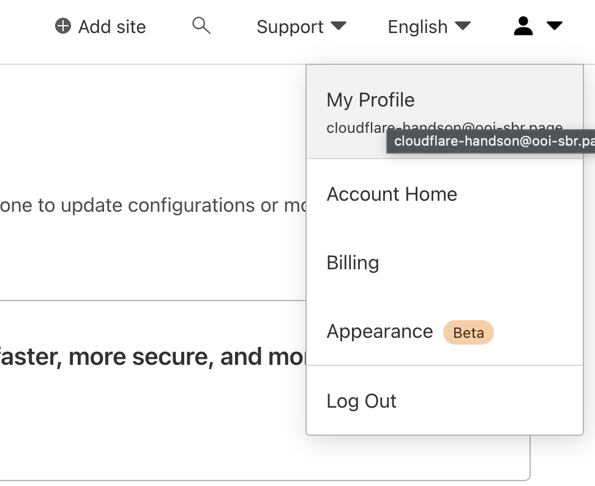
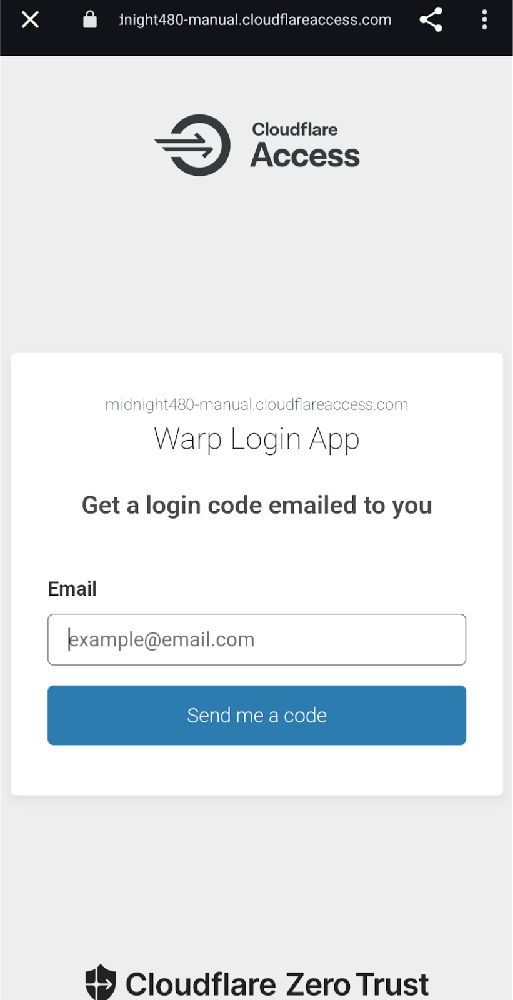

Last Updated: 2024-02-11
Cloudflare Zero Trust - Client
クライアントをCloudflareのネットワークまでWireGuard VPNでトンネルセッションを貼ることで、Cloudflareのネットワークを使ってインターネットに接続するサービスです。
対応端末
https://developers.cloudflare.com/cloudflare-one/connections/connect-devices/warp/download-warp/
Windows 10, 11
macOS Catalina+ (10.15+)
iOS 11+
Android 5.0+
Linux CentOS 8, RHEL 8, Ubuntu 16.04, Ubuntu 18.04, Ubuntu 20.04, Ubuntu 22.04,
Debian 9, Debian 10, Debian 11
Cloudflare アカウント
Cloudflareアカウントを作成します。
既にアカウントを所有している場合は本手順をスキップしてください。
Sign-up
メールアドレス、パスワード（ルールに準拠）、Cloudflare Turnstile（Bot対策用チェックボックスサービス）のチェックを通してください。

Complete
メールアドレス宛に本人確認を行うURLが送付されているので確認してください。
（任意）言語設定
デフォルトではEnglish（英語）が選択されています。
右上の言語部分を押すとプルダウンリストが表示されるため、任意の言語に変更してください。
本手順書はEnglishでキャプチャを選択しています。
（任意）MFA設定
Muilti-Factor Authenticator（MFA：多要素）認証の設定を推奨します。

初期設定

チーム名は後ほどWARPクライアントからZero Trustにサインインする際に必要となります
変更は後ほど記載する画面でも変更可能です
チーム名は各クライアントがインターネットを経由してアクセスするURLに利用されるため、
世界で一意の文字列である必要があります。
例）
名前-日付 鈴木さんが2024年2月11日実施する場合 suzuki-handson20240211 など
プラン選択

Account Type が標準（キャプチャ）でBusinessになっていますが、プルダウンメニューで
Personalに変更して登録頂いても構いません。（その項目によって登録する内容は変わりません）

ダッシュボード画面の表示
Cloudflare Zero Trustの初期画面が表示されればOK
Account
登録した情報を確認するメニューです。
Custom Pages
Team domain
初期登録したチーム名を変更する場合はこちらです
今回は変更しません
Block page
Gateway Block時に表示する画面の設定がこちらです
今回は変更しません
Login Page
WARPからZero Trustにログインする画面の設定がこちらです
今回は変更しません
Network
取得するログの方針を変更する設定がこちらです
今回は変更しません
Authentication
認証方式を変更する設定がこちらです。
今回は変更しません
WARP Client
Plan変更に遷移してしまうので何もしません
Downloads
ルート証明書、WARPクライアント、Cloudflaredなどがダウンロードできます
今は何もしません
Custom Pagesの初期設定
Settings > Custom Pagesに移動してください。
Network Settingsの変更
Settings > Network に移動してください。
Firewall
Proxy
Disabled -> Enabled✅
TCP ☑（標準で入っており変更不可）
UDP ☑（HTTP/3規格ではUDPベースのため）
ICMP ☐
TLS decryption
Disabled -> Enabled✅
Enable only cipher suites and TLS versions compliant with FIPS 140-2. ☐
AV inspection
Disabled -> Enabled✅
Scan on file upload ☑
Scan on file download ☑
Block requests for files that cannot be scanned ☑

Gateway Policyの変更
Gatewayで通信を見てアクセス許可（Allow）、禁止（Block）、透過（Bypass）など設定が可能です。
今回は、Zero Trustが有効な間は楽天市場（http://www.rakuten.co.jp/）の通信をブロックして通常利用できないようにします。
Gateway Policyを変更
Yahoo!JAPAN(yahoo.co.jp)をBlockします
Display block pageを✅にします
Save Policy を押すとDefault DNS Locationが未登録のため有効化できない警告がでるので、
そのまま、Gateway/Location を押します

Add A Locationを押します


ここまで設定した後に、ブラウザで楽天市場（http://www.rakuten.co.jp/）にアクセスしようとするとブロックします。
利用するデバイスポリシーの設定
My Team > Devices と進みます
Connect a Device を押します

Create an enrollment policy を押します
裏側でdefault policyが自動作成されます

今回利用するドメインを入力します
@gmail.com , @yahoo.co.jp などです
独自ドメインのメールで受信する場合はそちらを入力してください。

iPhone, Android, Windows, macOSでそれぞれ手順が異なります。
ご自身の設定に合わせて用意してください。
デバイスの用意（iPhone）
アプリのダウンロード
「1.1.1.1: Faster Internet」をApp Storeで
アプリの初回起動
「同意する」「VPNプロファイルをインストール」
Cloudflare Zero Trustへログイン
右上のハンバーガーメニューから設定 を開き、アカウントを選択する
Zero Trustに画面が切り替わるものの、まだ正常に接続できない
Download certificate (.pem) からルート証明書をダウンロード
iPhoneの設定
設定 > 一般 > VPNとデバイス管理 でCloudflare for Teams ECC Certificate Authority をインストール
設定 > 一般 > 情報 > 証明書信頼設定 で Cloudflare for Teams ECC Certificate Authority を信頼
これで接続できるようになります。
実際にアクセス
デバイスの用意（Andoroidの方）
アプリのダウンロード
1.1.1.1 + WARP: Safer Internet - Apps on Google Play
アプリの初回起動
「同意する」「VPNプロファイルをインストール」
通知は「Not now」
Cloudflare Zero Trustへログイン
右上のハンバーガーメニューからアカウント > Cloudflare Zero Trustにログイン
組織名（チーム名）を入力すると認証画面が表示されるためメールアドレスを入力
送付されるPINを入力

証明書も自動配置されるのでそのまま接続可能
Andoroid 14.xで確認する場合、
設定⚙ > セキュリティとプライバシー > その他のセキュリティとプライバシー > 暗号化と認証情報
- 信頼できる認証情報（ユーザ） ※環境によっては登録されていないかもしれません
- ユーザ認証情報
Cloudflareが登録されていることが確認できます
実際にアクセス
デバイスの用意（Windows）
以下の画面が別タブで開きます
https://install.appcenter.ms/orgs/cloudflare/apps/1.1.1.1-windows-1/distribution_groups/release
DOWNLOAD を押します

MSIファイルになっているのでダブルクリックしてインストールを進めます


チーム名をコピーします

証明書のダウンロード画面が出てきますので、念のためダウンロードしてください
Cloudflare WARPの設定変更
右下の⚙マークを押します
チームドメインを入力
アカウント タブを選択すると、右下に Cloudflare Zero Trustにログインが出てきます

自身で設定したチーム名を入力します

サインイン
今回利用するEmail Addressを入力してください
送られてきたメールに記載されているPINを入力します

認証が通るとWARPを開こうとします
ここでWARPからZero Trustに表示が変わります

（必要に応じて）ルート証明書のインストール
WARP（デスクトップアプリ）が自動配置する動きが標準ですが、
手順書作成時に、ルート証明書が配置されなかったので手順を追記しています。
Download the Cloudflare certificate
- 証明書ファイルを右クリックします。
- 「開く」を選択します。セキュリティ警告が表示された場合は、「開く」を選択して進みます。
- 証明書ウィンドウが表示されます。「証明書のインストール」を選択します。
- 次に、ストアの場所を選択します。セキュリティ警告が表示された場合は、「はい」を選択して進みます。
- 次の画面で、「参照」を選択します。
- リストから、「信頼されたルート証明機関」ストアを選択します。
- 「OK」を選択し、次に「完了」を選択します。

Zero Trustの通信が有効か確認
curl https://ipinfo.io/
"Org": が現在のプロバイダになっている状態
トグルスイッチをONにして接続します

curl https://ipinfo.io/
"org": "AS13335 Cloudflare, Inc.",
実際にアクセス
デバイスの用意（macOS）
以下の画面が別タブで開きます
https://install.appcenter.ms/orgs/cloudflare/apps/1.1.1.1-macos-1/distribution_groups/release
DOWNLOADを押します
パッケージファイルからインストールを進めます。
インストールが完了するまで進めてください。
Cloudflare WARPの設定変更
メニューバーに追加されたWARPの歯車⚙マークを押して設定（Preferences）を押します。
チームドメインを入力
Accountタブから Login to Cloudflare Zero Trust を押します
自身で設定したチーム名を入力します
サインイン
今回利用するEmail Addressを入力してください
送られてきたメールに記載されているPINを入力します
認証が通るとWARPを開こうとします
ここでWARPからZero Trustに表示が変わります
（必要に応じて）ルート証明書のインストール
WARP（デスクトップアプリ）が自動配置する動きが標準ですが、
接続をしようとしても保護されていると表示されない方は手動で配置してください。
download the Cloudflare certificate から .crt ファイル
- ルート証明書をダウンロード
- ターミナルを開く
- 以下のコマンドを実行
sudo security add-trusted-cert -d -r trustRoot -k /Library/Keychains/System.keychain <path-to-Cloudflare_CA.crt>
- (任意）もし異なるキーチェーンに証明書を配置する場合は以下のコマンドを実行
echo | sudo tee -a /etc/ssl/cert.pem < Cloudflare_CA.pem
Zero Trustの通信が有効か確認
ターミナルで以下のコマンドを実行してください。
curl https://ipinfo.io
"Org": が現在のプロバイダになっている状態
トグルスイッチをONにして接続します
curl https://ipinfo.io
"org": "AS13335 Cloudflare, Inc.",
実際にアクセス
http://www.rakuten.co.jp/ へアクセス
macOS・ESETの環境の方向け
ESETを一時的に通信の対話モードへ切り替えて、WARPの接続を起動して通信を発生させて、追加させる対応を実施しました。